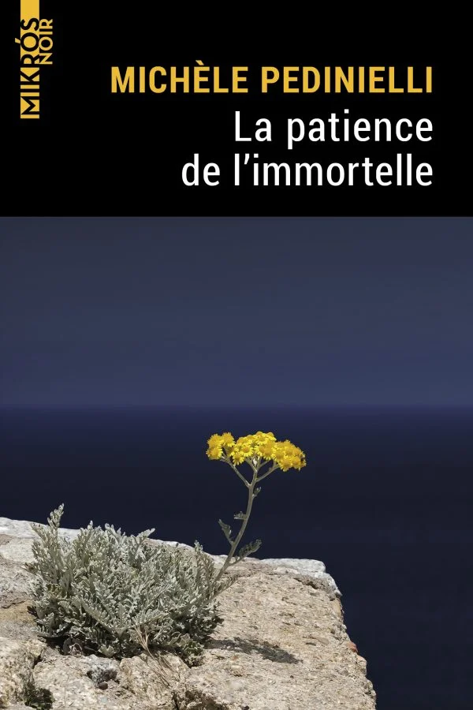

Ayant beaucoup aimé Boccanera et Après les chiens, j’ai été bien content de retrouver la détective privée niçoise Ghjulia Boccanera, dite Diou, quinquagénaire au caractère bien trempé inventée par l’autrice niçoise Michèle Pedinielli. Cette troisième enquête prend d’emblée un tour personnel pour Diou, car la nièce de son ex-compagnon (le policier Jo Santucci) a été retrouvée morte brûlée dans le coffre de sa voiture. Letizia était une brillante journaliste de France 3 Corse et son meurtre est un choc. À la demande de Jo, Diou quitte Nice et retourne sur l’île - dont elle est originaire - pour enquêter en parallèle de la police. Pendant ses recherches, elle renoue avec la famille de Letizia dont elle a fait partie, il y a longtemps. J’aime bien les polars qui nous emmènent en voyage et La patience de l’immortelle en est un bel exemple. Ballades dans le maquis, vues imprenables sur la mer, cafés noirs et locaux taciturnes : on s’y croirait. Souvent touchant et nostalgique, mais aussi drôle, c’est un récit qui mériterait un badge “100% Corse”, qui se lit en quelques heures et qu’il est difficile de lâcher avant d’en avoir le fin mot.
Sortie : 2021
Servir les riches est le résultat d’une enquête de terrain parmi les domestiques et leurs très fortunés patrons (et patronnes). Alizée Delpierre, que le site des éditions La Découverte présente comme sociologue, spécialiste des domesticités, de l’exploitation au travail et des grandes fortunes, est très carrée dans son approche. Ce travail au long cours l’a vue interroger et côtoyer au quotidien de nombreuses domestiques (beaucoup de femmes, quelques hommes) au service des très riches et essayer de mieux comprendre leur vie, leurs aspirations et leurs difficultés (qui varient bien sûr selon leur genre, leur origine,…). Elle a aussi questionné des patrons et patronnes : les passages retranscrivant ces entretiens sont d’ailleurs l’occasion de lire des dingueries assez phénoménales, qui donnent une bonne idée du niveau de déconnexion et de toute-puissance de ces gens (même si, là aussi, une dimension genrée s’applique). C’est un livre très intéressant, nuancé, qui montre bien l’attrait qu’exercent ces postes, mais aussi les potentiels abus qu’ils impliquent.
Sortie : 2022